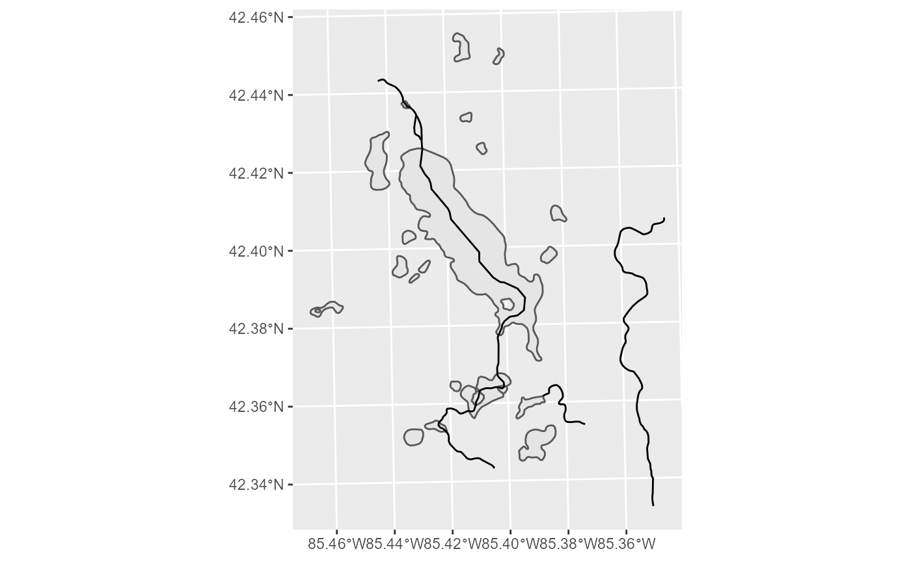
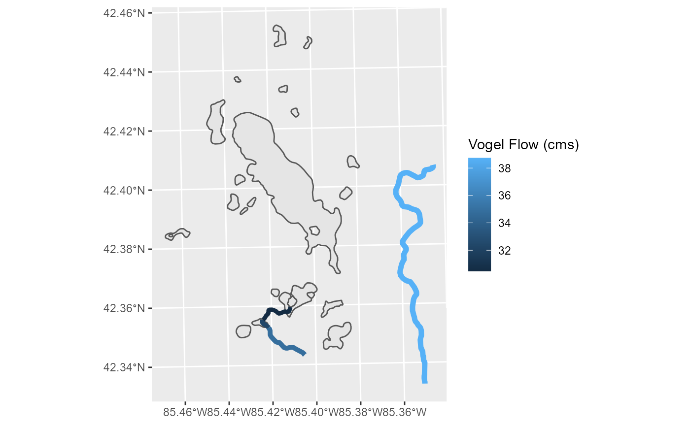

Let’s get some flow data for the NHDPlus subset included with nhdR package. Our goal is to adjust the color and size of each reach by their average flow.

NHDPlus includes two estimates of flow:
Visualization
gull_sf <- dplyr::filter(gull_sf, !is.na(Q0001F))
gull_sf %>%
ggplot() +
geom_sf(data = gull$sp$NHDWaterbody) +
geom_sf(aes(color = gull_sf$Q0001F), size = gull_sf$Q0001F / 20) +
labs(color = "EROM Flow (cms)")
gull_sf <- filter(gull_sf, !is.na(MAFLOWV))
gull_sf %>%
ggplot() +
geom_sf(data = gull$sp$NHDWaterbody) +
geom_sf(aes(color = gull_sf$MAFLOWV), size = gull_sf$MAFLOWV / 20) +
labs(color = "Vogel Flow (cms)")